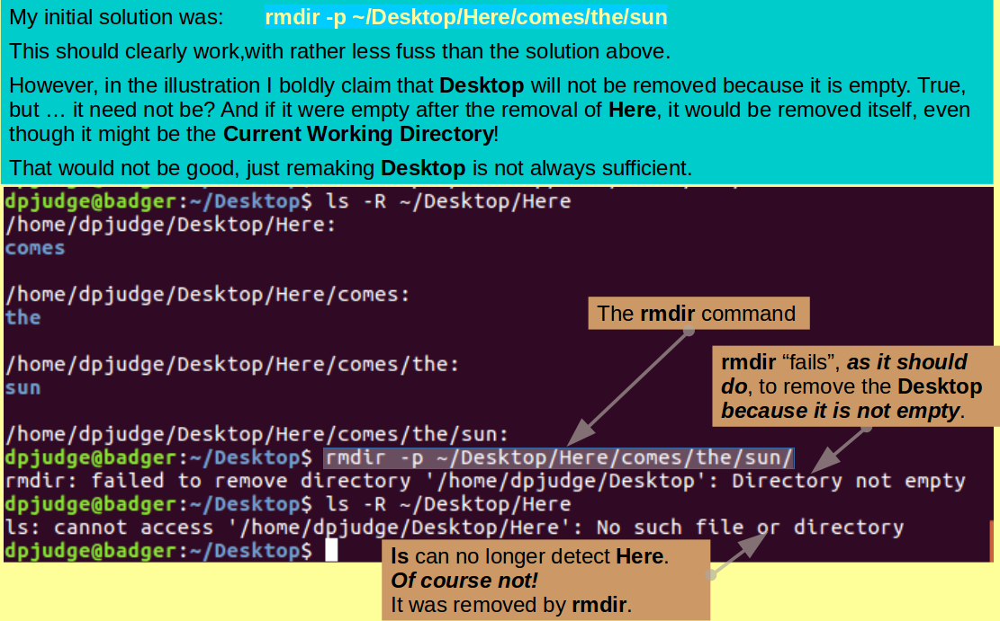
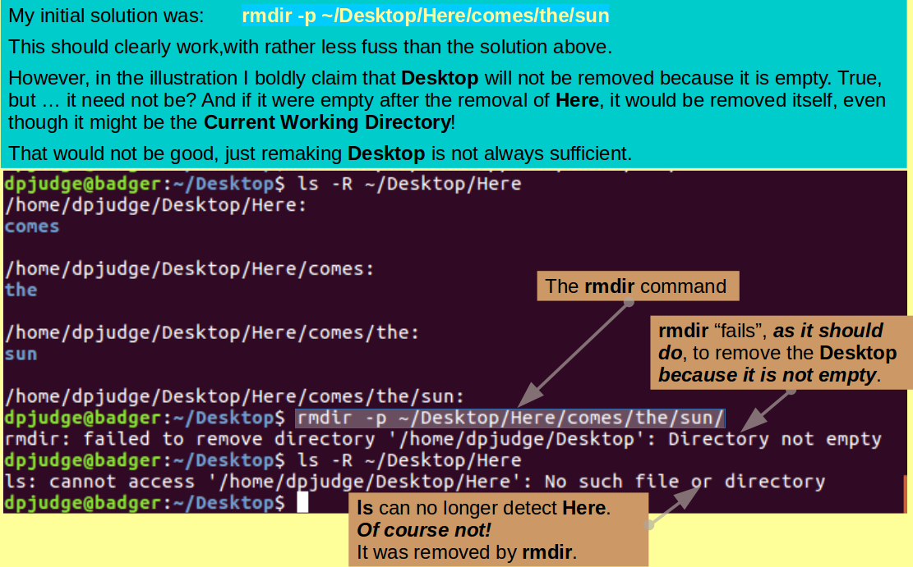

|
|
|
|
Some familiarity with the UNIX Command Line will be assumed for this course. No class time will be dedicated to learning UNIX.
If you think this might be a problem for you, please make use of the materials below. They should be enough as you do not need to be a UNIX expert.
For many of you, instruction on the wonders of the UNIX Command Line will be unnecessary.
Accordingly, here is offerred a short video outlining how the UNIX Files and Directories are organised and addressed.
Also offerred is a link to a UNIX Command Line Tutorial. Going through just Part I should be well sufficient for this course. link to a UNIX Tutorial for you to do, if you feel the need, before the Course proper commences.
Before looking at any UNIX commands, it is essential to understand the way files and directories (folders if you prefer) are arranged and referenced in a UNIX environment.
If you think it might help, have a look at the following short Video.
Part I of this Tutorial should provide more than enough familiarity with UNIX to meet the requirements of this Training Course.
A quizz, wait until the Delivery version is
ready and the
login to Room 32COU as a Student.
Click here for the quizz.
python as a calculator ... introduce the alebra ... As Alegra does already
data types? Look up classes. Methods? Attributes? Is here where one mentions OOP? Need to read and look at existing materials
For this section, it will be assumed that you are familiar with the types of Loop Structure that can be incorporated in an Alogorithm.
We offer a short Video to discuss as much as is relevant.
Class time will not be allocated to this material, so you are urged to take a few momwnts to go through the Video before the class starts.
A video - Improving Algorithm Design
by the use of Repeat Structures (Loops)
Loops - A video
A quizz, wait until the Delivery version is
ready and the
login to Room 32COU as a Student.
Click here for the quizz.
Then the syntax with trivial examples??
Hand held exercise using Y/N code??
Exercises with answers withheld??
Now some exercises to confirm your understanding.
Exercise 1:
Part (i)
Write some code to inquire of a user's health, requesting the reponse "Yes" or "No".
If the user responds in a way that is encouraging, respond as if encouraged.
If the user responds negatively, suggest he/she goes away and suffers in silence!
Treat "Y", "y", "YES", "yes" as YES ... anything else as NO.
Part (ii)
Using the appropriate Python Loop Structure, make the relevant part of the code of Repeat until the stupid user enters something that is unequivicably YES or NO.
Issue a stern reprimand each time an ambiguous response is entered.
Exercise 2:
Part (i)
Download the file sequences.fasta, and put the file in your Current Working Directory.
Part (ii)
Write code to read in the file sequences.fasta one line at a time and then print out that line.
Part (iii)
Using the Python command continue, Amend the code of Part (ii) so that only the sequence Annotation Lines (the ones that start with a '>' are printed.
Code goes here ... with pseudo-code?
First move up a directory, making Desktop the Current Working Directory.
Then, with but a single command, using rmdir, remove the functionless tower of empty directories created in the previous question, referenced relative to the Current working directory?
Note: Referencing the directory tower to be destroyed carefully is very important as, in rather exceptional circumstances, you might otherwise succeed in destroying your Desktop directory! This, as I have just discovered, can be quite painful!
Any reference that includes Desktop, explicitly or otherwise, should be avoided. So:
| Command | Working Directory | Comment |
|---|---|---|
| ~/Desktop/Here/comes/the/sun | Anywhere | BAD! Explicit inclusion of Desktop |
| ../Here/comes/the/sun | ProjectX | BAD! '..' is Desktop |
| ./Here/comes/the/sun | Desktop | BAD! '.' is Desktop |
| Here/comes/the/sun | Desktop | GOOD! no reference to Desktop |
Once your task is completed, make ProjectX your Working Directory once more.
 

The exercise directory you created so long ago, is now awash with a delight of files, links and directories of minimal purpose! The time has come to clean up and start afresh.
How, with but a single command, using rm, would you remove everything that remains in ProjectX?
A video ...
User Defined Functions - A video
mkdir HTS; cd HTS;
First a socrates on the video??
Then the syntax with trivial examples??
Hand held exercise using Y/N code??
Exercises with answers withheld??
Simply put all the functions mad so far in a file and include the file in lots of different ways
Maybe a short video on why it is a good idea? When it is appropriate why it is structured programming
EXERCISE BODY
Commands introduced in this section are:
Concepts/tricks introduced in this section are:
Reflections:
Now some simple questions to test your understanding.
Hint: The Linux Manual Pages (and/or the man command) will be invaluable.
Answer.
Code goes here ... with pseudo-code?